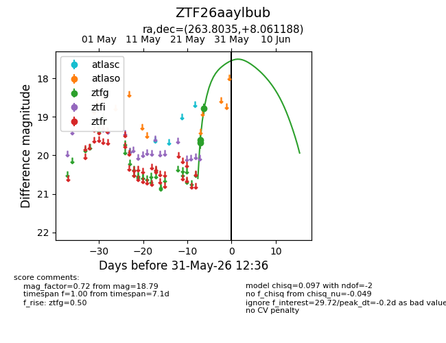
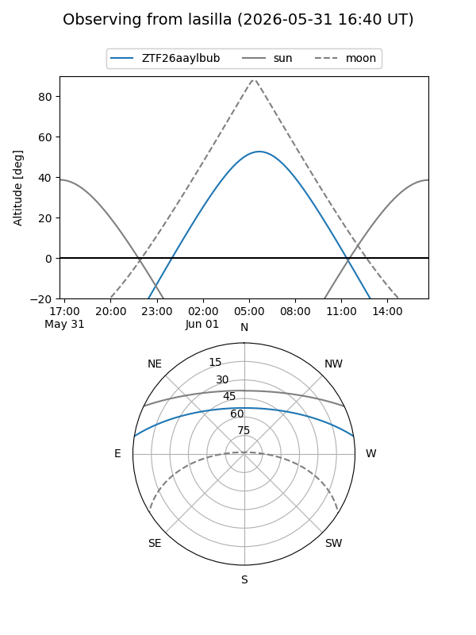
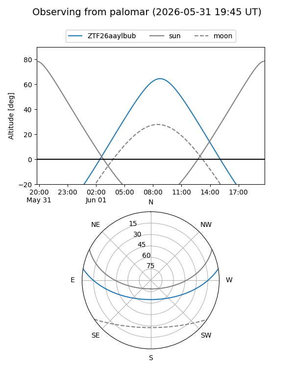
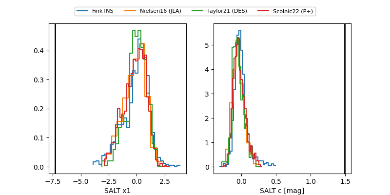

ZTF26aaylbub
Target ZTF26aaylbub at 2026-05-31 12:37
Aliases and brokers:
lsst-FINK: link
lsst-Lasair: link
lsst-ALeRCE: link
ztf-FINK: link
ztf-Lasair: link
ztf-ALeRCE: link
alt names
ZTF26aaylbub (ztf,fink_ztf)
Coordinates:
equatorial (ra, dec) = 263.8035,+8.06119
equatorial (HMS+DMS) = 17:35:12.85,+08:03:40.28
galactic (l, b) = (31.5486,+20.58796)
Flags:
Photometry:
last ztfg=18.79
3 ztfg detections
Lightcurve

Visibility


Additional plots
